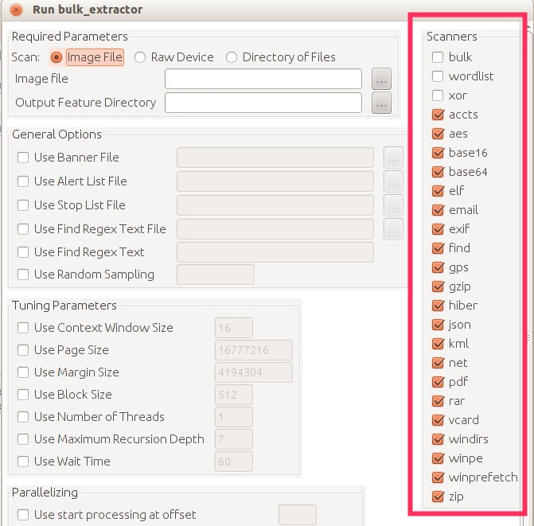

Understanding Bulk Extractor Scanners
For help using the Bulk Extractor Viewer, please see the Bulk Extractor Viewer tutorial.### Overview
BitCurator can help you locate and explore specific types of information in your disk image; this feature both allows you to
- protect the materials' donor by discovering potentially sensitive information before making a disk public (e.g. social security numbers), and
- explore materials by finding specific types of information (e.g. search for email addresses in order to locate correspondence between an author and her editors)
Step-by-Step Guide
Before pressing the "Start bulk_extractor" button in the Bulk Extractor Viewer, you have the option of including or excluding a variety of scanners in the Bulk Extractor reports, via the checkboxes on the right side of the page (i.e. after completing Step 6 of the Bulk Extractor tutorial). Note that there is not necessarily a one-to-one relationship between scanners (toggled on or off) and the produced reports. For example, the pii.txt report, although it is currently only written to by the "Accounts" scanner, will not necessarily only contain PII from credit cards and SSNs. Multiple scanners might write to the same feature file: the "exif" scanner searches the file formats used by digital cameras, finds GPS coordinates in images, and writes those findings to the output file gps.txt; a separate scanner, the gps scanner, searches Garmin Trackpoint data and also finds GPS coordinates and writes them to gps.txt[1]. Additionally, many of the scanners produce a histogram file an addition to the main output file; for example, the email scanner generates "email_histogram.txt" in addition to "email.txt".

Reports may contain false positives; the "accounts" scanner may produce credit-card-number-like strings in its ccn.txt output file that are not, in fact, credit card numbers.
Below are the possible scanner options and what each scanner locates on your disk image.
Bulk Extractor Scanners: Where They Output and What They Do
|
Scanner name |
Output feature file |
Recovery description / archival usefulness |
|---|---|---|
| bulk | bulk.txt | Performs a bulk data scan. |
| wordlist | wordlist.txt, wordlist_*.txt | A list of all “words” extracted from the disk, useful for password cracking or to discover if an author ever used a specific term (including in deleted/hidden files). Note that the words this scanner can access depend on which other scanners are on; to include words in .zip files, for example, you'd need to have the "zip" scanner enabled. |
| xor |
|
XOR is a technique for obfuscating data, often used to conceal sensitive data and code within malicious files and programs [4] ; this scanner searches for data hidden by XOR. |
| accounts | telephone.txt, ccn.txt, ccn_track2.txt, pii.txt | Credit card numbers, credit card track 2 information (the magnetic stripe data track read by ATMs and credit card checkers [5] ), phone numbers, and other formatted numbers. Useful for tracking how a device's user(s) conducted business. |
| aes | aes_keys.txt | AES key schedules in memory (AES key schedules expand a short key into a number of separate round keys [6] ). |
| base16 | hex.txt | BASE16 coding, aka hexadecimal or hex code (includes MD5 codes embedded in the data). The primary use of hexadecimal notation is a human-friendly representation of binary-coded values in computing and digital electronics. Hexadecimal is also commonly used to represent computer memory addresses. [7] |
| base64 |
|
BASE64 coding. Base64 is a group of similar binary-to-text encoding schemes that represent binary data in an ASCII string format by translating it into a radix-64 representation [8] . |
| elf | elf.txt | Linux Executable and Linkable Format (formerly called Extensible Linking Format). A common standard file format for executables, object code, shared libraries, and core dumps [9] . |
| email.txt, rfc822.txt, domain.txt, ether.txt, url.txt | Discovers RFC822 email headers, HTTP cookies, hostnames, IP addresses, email addresses, and URLs. Useful for recreating email correspondence on a device. | |
| exif | exif.txt, gps.txt, jpeg_carved.txt | Exifs, or exchangeable image file format, is a standard that specifies the formats for images, sound, and ancillary tags used by digital cameras (including smartphones), scanners and other systems handling image and sound files recorded by digital cameras; it includes .JPG, .TIFF, and .WAV [10] . This scan finds EXIFs from JPEGs and video segments (and carving of JPEG files); this feature file contains all of the EXIF fields, expanded as XML records. |
| find | find.txt | Returns the results of specific regular expression search requests. A regular expression is a way of searching for patterns in strings of characters; RegexOne.com offers a good basic tutorial on writing regular expressions to create extremely specific searches. |
| GPS | gps.txt | Garmin-formatted XML containing GPS (global positioning system, i.e. location mapping) coordinates. |
| gzip |
|
Files compressed with the gzip algorithm (such as browser cache entries, HTTP streams) and ZLIB-compressed gzip streams. |
| hiber |
|
Windows Hibernation file fragments. Windows "hibernate mode" saves a copy of everything in your PC’s memory (RAM) onto your hard disk before it shuts down [11] . |
| json | json.txt | Javascript Object Notation (JSON), a text-based open standard designed for human-readable data interchange [12] , objects downloaded from web servers, and well as JSON-like objects found in source code. |
| kml | kml.txt | KML files (carved). KML is Keyhole Markup Language (KML), an XML notation for expressing geographic annotation and visualization within Internet-based, two-dimensional maps and three-dimensional Earth browsers [13] . |
| net | ip.txt, ether.txt | IP and TCP packets (types of network packets, formatted units of data carried by a packet-switched network [14] ) in virtual memory, and creates libpcap files (the libpcap file format is the main capture file format used in TcpDump/WinDump, Wireshark/TShark, snort, and many other networking tools [15] ). |
|
|
Text from PDF files. | |
| rar | rar.txt, unrar_carved.txt | RAR components in unencrypted archives are decrypted and processed. Encrypted RAR file are carved. RAR is a proprietary archive file format that supports data compression, error recovery and file spanning [16] . |
| vCard | vcard.txt | vCard recovery. vCard is a file format standard for electronic business cards [17] . |
| windrs | windrs.txt | Windows FAT32 and NTFS directory entries. |
| winpe | winpe.txt | Windows Preinstallation Environment (PE) executables (.exe and .dll files notated with an MD5 hash of the first 4k). PE is a minimal Win32 operating system with limited services, built on the Windows Vista kernel. It is used to prepare a computer for Windows installation, to copy disk images from a network file server, and to initiate Windows Setup [18] . |
| winprefetch | winprefetch.txt | Windows prefetch files and file fragments. Each time you turn on your computer, Windows keeps track of the way your computer starts and which programs you commonly open; Windows saves this information as a number of small files in the prefetch folder [19] . |
| zip | zip.txt, unzip_carved.txt | A file containing information regarding every ZIP file component found on the media. This is exceptionally useful as ZIP files contain internal structure and ZIP is increasingly the compound file format of choice for a variety of products such as Microsoft Office. Will find zlib-compressed regions. |
Notes:
- http://digitalcorpora.org/downloads/bulk_extractor/BEUsersManual.pdf
- //https://forensicswiki.xyz/wiki/index.php?title=Bulk_extractor
- //digitalcorpora.org/downloads/bulk_extractor/doc/2013.COSE.bulk_extractor.pdf
- https://raw.github.com/simsong/bulk_extractor/master/doc/programmer_manual/BEProgrammersManual.tex
- https://web.archive.org/web/20170705220707/http://www.acmetech.com/documentation/credit_cards/magstripe_track_format.html
- https://en.wikipedia.org/wiki/Rijndael_key_schedule
- https://en.wikipedia.org/wiki/Base16
- https://en.wikipedia.org/wiki/Base64
- https://en.wikipedia.org/wiki/Executable_and_Linkable_Format
- http://en.wikipedia.org/wiki/Exchangeable_image_file_format
- http://helpdeskgeek.com/windows-vista-tips/delete-remove-hiberfil-sys/
- https://en.wikipedia.org/wiki/JSON
- https://en.wikipedia.org/wiki/Kml
- https://en.wikipedia.org/wiki/Network_packet
- http://wiki.wireshark.org/Development/LibpcapFileFormat
- https://en.wikipedia.org/wiki/Rar
- https://en.wikipedia.org/wiki/Vcard
- http://technet.microsoft.com/en-us/library/cc766093%28v=ws.10%29.aspx
- http://windows.microsoft.com/en-us/windows-vista/what-is-the-prefetch-folder
If you would like to provide feedback for this page, please follow this link to the BitCurator Wiki Google Form for the BitCurator All Step-by-Step Guides section.